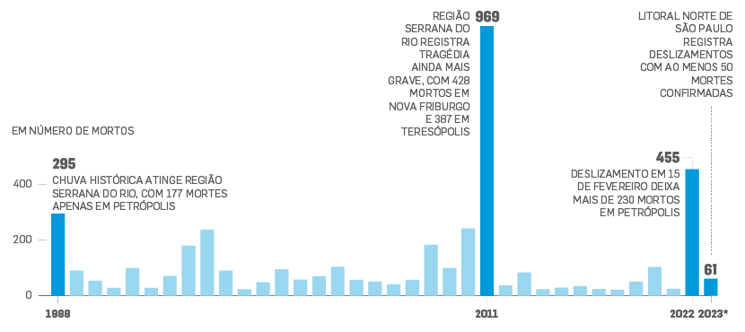
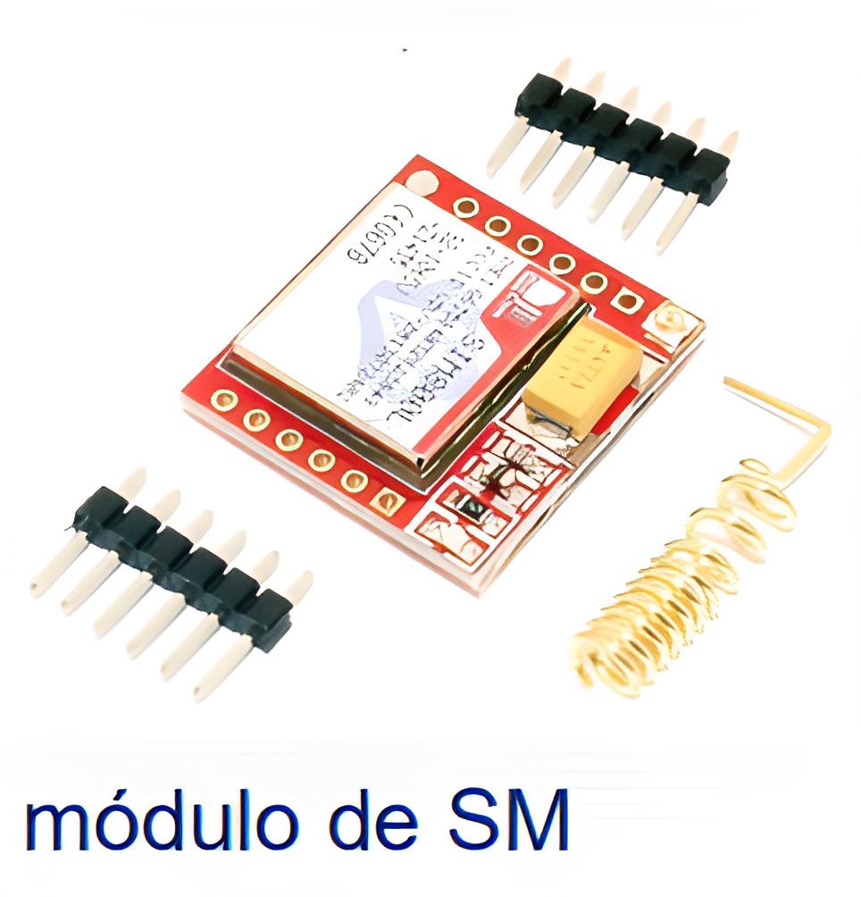
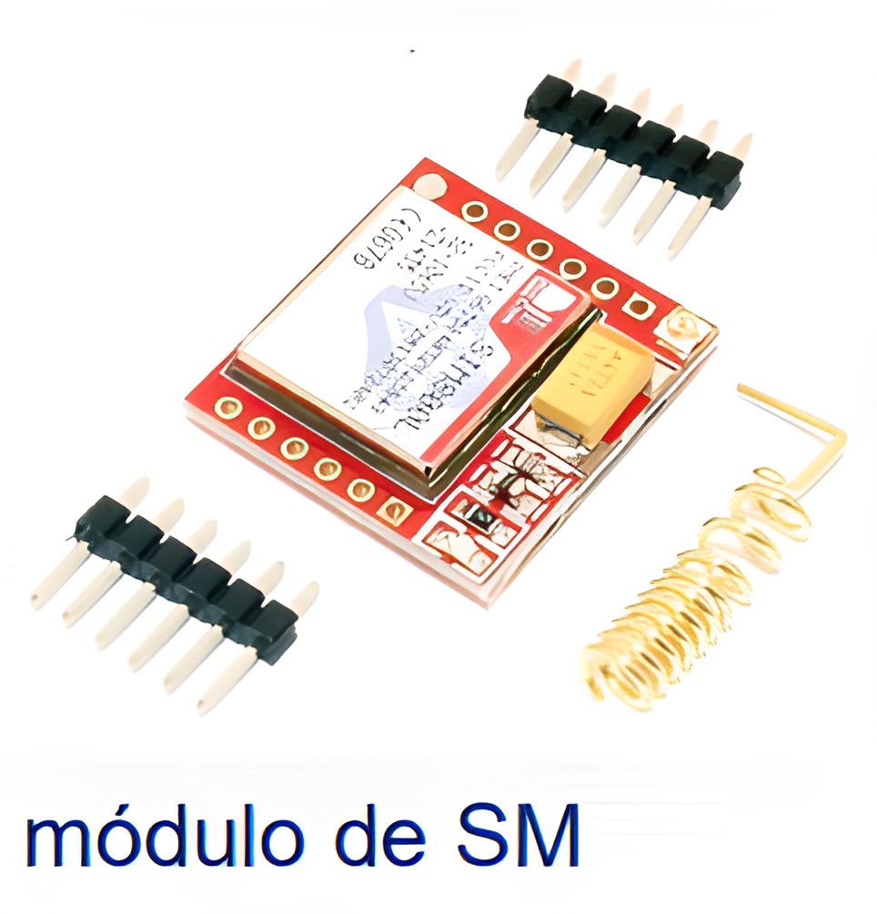
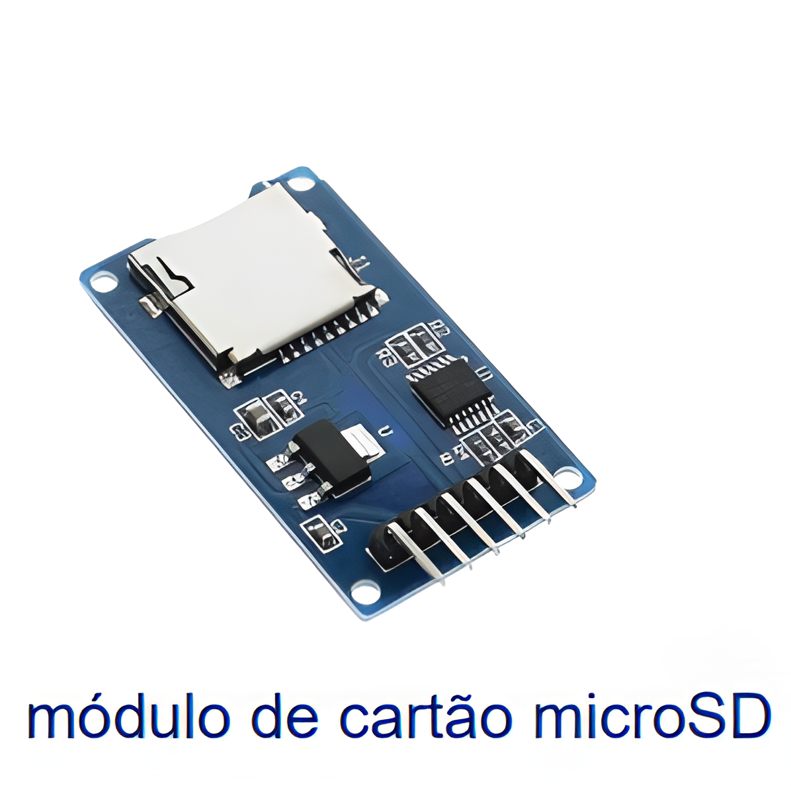
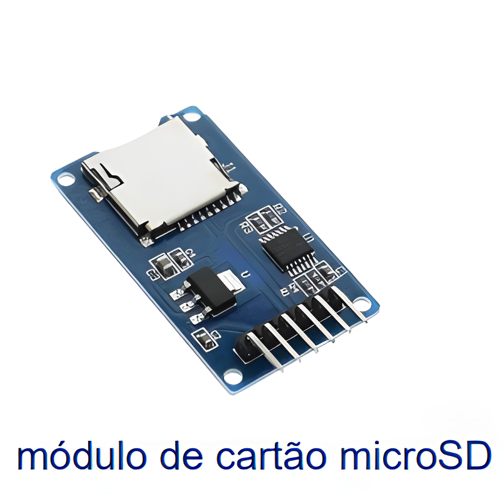

Objetivo
Desenvolver um sistema de sensoriamento remoto de deslizamento de terra para antecipar catástrofes, principalmente em regiôes urbanas, evitando ao máximo ferimentos e fatalidade.
Por que desenvolver o sistema?
Segundo uma pesquisa feita pelo ITP (Instituto de Pesquisa Tecnológica do Estado de São Paulo) em 2022, no período de junho de 1988 a junho de 2022, mais de 4.146 pessoas foram mortas por deslizamento de terra. Sendo entre todos os estados do Brasil, o Rio de Janeiro é o que tem mais fatalidades, com 2.143 mortes.O estado de São Paulo tem 3,8 vezes maior que o segundo lugar, que fica com o estado de São Paulo com 567 mortes.
É possível antever esses acontecimentos?
A ocorrência de deslizamentos de terra é possível de ser evitada, incluindo seus danos econômicos e humanos, por meio da implementação de políticas de planejamento urbano e territorial. Portanto, a promoção de políticas públicas em setores como habitação e assistência social possibilitam a atenuação dos estragos causados pelos deslizamentos de terra, além de resultar em melhoria na qualidade de vida da população. Ademais, para evitar o fenômeno, é necessário preservar as condições naturais do meio ambiente. Nesse sentido, a preservação da vegetação nativa, a conservação das matas ciliares (tipos de vegetação que circundam curso de água), a deposição correta do lixo e a não sedimentação do solo, são pontos importantes que minimizam os eventos de deslizamento de terra. Assim, de forma geral, deve-se evitar ao máximo a ocupação humana em zonas altamente inclinadas e ambientalmente frágeis, como encostas e margens de rios.
Já existem alguns sensores de deslizameto:
Sim, já existem diversas tecnologias com o intituto de minimizar os danos causados pelos deslizamentos:


 

 
